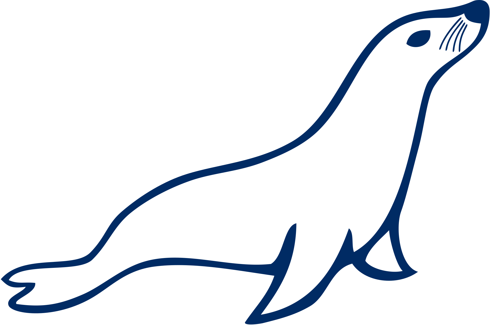
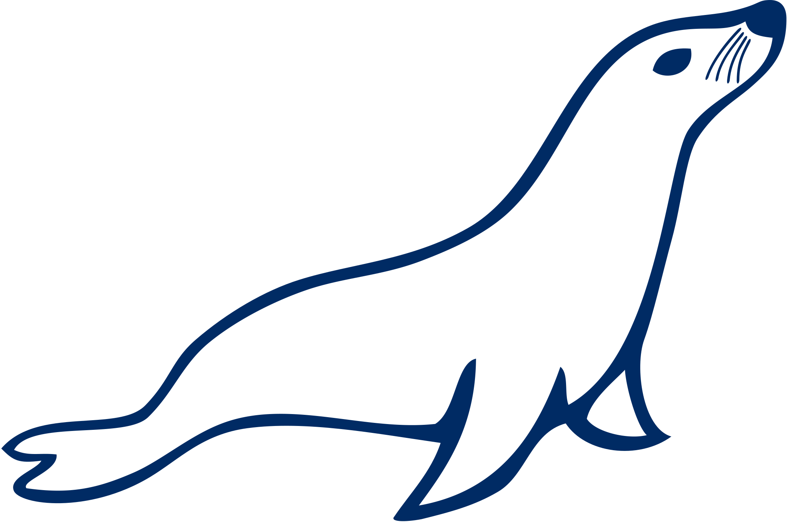

Parcours académique
Collège Jean Perrin
- Adresse: 61 Rue Audran, 94400 Vitry-sur-Seine
- Années: 2014-2018
- Diplôme: Brevet des collèges
- Mention: Assez bien
Lycée Jean Macé
- Adresse: 34 Rue Jules Ferry, 94400 Vitry-sur-Seine
- Années: 2018-2020
- Diplôme: Baccalauréat
- Spécialisations:
- Mathématiques
- Sciences de l'ingénieur
- Mention: Bien
IUT de Montreuil
- Adresse: 140 Rue de la Nouvelle France, 93100 Montreuil
- Années: 2020-2024 ( en cours )
- Diplôme: BUT Informatique
- Parcours: réalisation d'applications : conception, développement, validation
Projets
Terraria like
Pour notre projet de première année en BUT informatique, nous avons formé des groupes de trois étudiants et travaillé à partir d'un cahier des charges pour développer un jeu type Terraria en un mois, en suivant les méthodes de développement agile.
- Java
- JavaFX
Générateur d'exercices
Dans le cadre d'un projet de deuxième année de BUT informatique, en groupes de trois, nous avons collaboré pendant cinq mois avec un client réel pour élaborer un cahier des charges puis développer un produit final répondant à ses attentes. Ce processus intensif a renforcé nos compétences en gestion de projet et communication client.
- HTML
- CSS
- JS
- JQUERY
- PHP
- POSTGRESQL
- DOCKER
Android Pokedex
Dans le cadre d'un projet de deuxième année de BUT informatique d'une durée de deux semaines, en équipe de deux nous avons choisi de développer un Pokédex comme application mobile. Ce choix nous a permis de mettre en pratique nos compétences en développement tout en explorant notre passion pour l'univers Pokémon.
- Java
- SQLITE
CarMate
Dans le cadre d'un projet de troisième année de BUT informatique, en groupe de cinq durant trois mois avec un client réel, nous devions développer un site de covoiturage destiné aux étudiants, en suivant un cahier des charges. Avec des rôles tournants (DevOps, développeur front-end, développeur back-end) et des cycles de sprint de deux semaines, nous avons pu expérimenter une dynamique de travail flexible et efficace, tout en répondant aux besoins spécifiques de notre client.
- Angular
- Flask
- Docker
- Postgresql
- Tailwind
- SCSS
Hellosafe
- Type de contrat: Alternance
- Durée: 2 ans
- Dates: Septembre 2023 - Aout 2024
- Poste: Développeur full-stack
- Taille de l'équipe tech: 5 personnes
Les technologies utilisées
 





En plus de ces technologies, nous avons adopté une approche DDD (Domain-Driven Design) et la clean architecture pour structurer nos projets, assurant ainsi une meilleure séparation des préoccupations et une évolutivité accrue.
Les missions
- Création d'outils sur les différents sites avec vue js comme ici
- Maintenance du site, ajout de features et de blocs à wordpress
- Creation d'une nouvelle plateforme avec next js / symfony pour la création, édition et suppression de comparateurs
Organisation de l'équipe
Participation active aux daily meetings, permettant un suivi régulier de l'avancement des projets, une communication fluide au sein de l'équipe et une réactivité accrue face aux imprévus.
À propos de moi
Bonjour ! Je m'appelle Tiago Narciso. Actuellement en troisième année de Bachelor Universitaire de Technologie (BUT) en informatique, je m'épanouis dans un apprentissage en alternance chez Hellosafe, où je développe mes compétences en tant que développeur full-stack. Ma passion pour la technologie ne se limite pas à mes études ; elle s'étend également à mes loisirs, où je me plonge dans l'univers compétitif des jeux en ligne.
En dehors de l'écran, je trouve mon évasion en assistant à des spectacles de théâtre dramatique. Cette passion pour les arts de la scène offre un contraste captivant avec le monde numérique dans lequel je m'immerge quotidiennement. Mon parcours est une quête d'équilibre entre technologie, compétition et art dramatique, me forgeant une identité unique où l'innovation et la créativité se rencontrent.
Mon CV